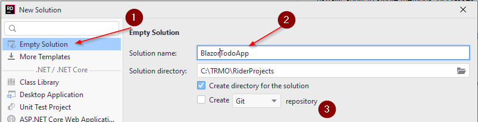

- 1 Introduction
- 2 New solution
- 3 Project structure
- 4 Creating domain component
- 5 Model classes
Introduction
This tutorial will initially introduce you to Blazor-server. You will create a web app to manage todo items. You can consider it a very simple Trello clone.
You will create basic features, such as
- creating a Todo
- viewing all
- searching
- modifying
- deleting
Initially the data will be saved in a file, as json format.
In later sessions, we will expand upon the tutorial, changing it to a client server system using REST, and lastly adding a real database, using Entity Framework Core (EFC).
The entire collection of Todo tutorials aim to perfectly prepare you for the exam.
All source code will be on GitHub, so you always have a reference, if you're stuck.
Creating a new solution
For previous exercises, you have most likely put them all in the same solution, and created a new project for each exercise.
This tutorial will be a slightly larger exercise, perhaps sort of a mini-SEP. As such, we wish to have a better code-structure for our application. You have been taught the SOLID design principles. They usually apply to single methods, or classes. In this project we will attempt to apply Clean Architecture, which is basically applying the SOLID principles on a larger scale.
Therefore, we're going to need a new, empty solution. You can name it TodoApp.
Follow the steps below to create a new solution:

Clicking New... will open the dialog for creating a new solution, see below.
- Select Empty Solution
- Give your solution a name. I have multiple Todo apps by now, so I have called mine BlazorTodoApp
- You can choose to add a git repository, if you wish.

Your new empty solution should now look like this:

I.e. it's pretty empty. Next up, we will talk about the solution structure.
Project structure
You have previously heard about layered systems on second semester, a simple example could look like this:

The above would be a basic structure for a local desktop app. In SEP2 you expanded to a client/server system, using JFX. Such a system could be diagrammed like below:

The same approach applies: Layers have different responsibilites, and each layer is separated by interfaces. In SEP2 you probably divided layers into different packages. The next step is to separate into components. In Java it's called a module, in .NET it's called a project. This means your .NET app will be structured using an approach like below:

This is your entire solution. You will have at least 4 components: Blazor, WebAPI, Domain, DataAccess. Each component may contain multiple layers.
In this first part we will start with Blazor and DataAccess. You may notice there is no component for business logic, simply because this app is rather simple. The final structure of your Todo app at the end of the semester may look slightly different.
In your SEP3 you're going to need a component for logic.
The point is that these projects (components) are separated, each handling their own responsibilities. There are different approaches on how to structure these components. We will do by layer, because that is simpler. However, in your professional career, you will probably encounter a separation by feature. This is the recommended approach, however much more complicated.
This may seem a bit overwhelming, but we will take it step by step, holding hands along the way. You will be safe.
The Domain component
First, need the model classes. In this first iteration of the tutorial, we will just need a Todo object. Later we will add Users.
New project
Create a new Library project, by right-clicking your solution:

This will open a familiar dialog, where you can create a Class Library (1). Give the project a name (2), I have called mine Domain. In your case, you can probably only select net6.0 (3). Finally press Create (4).

A Class Library is a type of project which cannot be run, it instead contains functionality. All NuGet packages are generally libraries with functionality, you can import into your system. Your Domain component will just contain the domain model classes, there is nothing to run. If you make custom Exceptions, they could also go here.
Model classes
Inside your Domain project, create a new directory, name it Models. In here we put the model classes.
Create a new class, call it Todo:

The Todo class needs properties for the data, a Todo should hold:
namespace Domain.Models;
public class Todo
{
public int Id { get; set; }
public int OwnerId { get; set; }
public string Title { get; set; }
public string Description { get; set; }
public bool IsCompleted { get; set; }
public Todo(int ownerId, string title, string description)
{
OwnerId = ownerId;
Title = title;
Description = description;
}
}
We have created a constructor, which only takes three of the five properties as arguments. The intention is that the Id should be set by whatever class persists the data, and you cannot create a Todo, which is initially already completed.